This assignment focuses on core 2D transformations: translation, rotation, and scaling.
Using basic OpenGL primitives and transformation matrices, I constructed a cute 2D cat scene from
scratch.
The goal was to build intuition for coordinate spaces and how matrix operations control positioning and
shape.
It also laid the foundation for later work involving animation and camera-like control.
Overview
This OpenGL portfolio is a curated collection of my CS3241 coursework, built in C++ with FreeGLUT on Visual Studio 2022. Across five assignments, I progressed from core 2D transformations to animation systems, lighting and shading, Bezier curve modeling, and finally ray tracing with shadows and texture mapping. Each project is implemented as an independent Visual Studio project and organized under a single solution for easy build-and-run, with shared FreeGLUT configuration to keep the setup lightweight and reproducible. Together, these works showcase my understanding of real-time graphics fundamentals and my ability to translate mathematical concepts into interactive visual demos.
Transformation (2D)
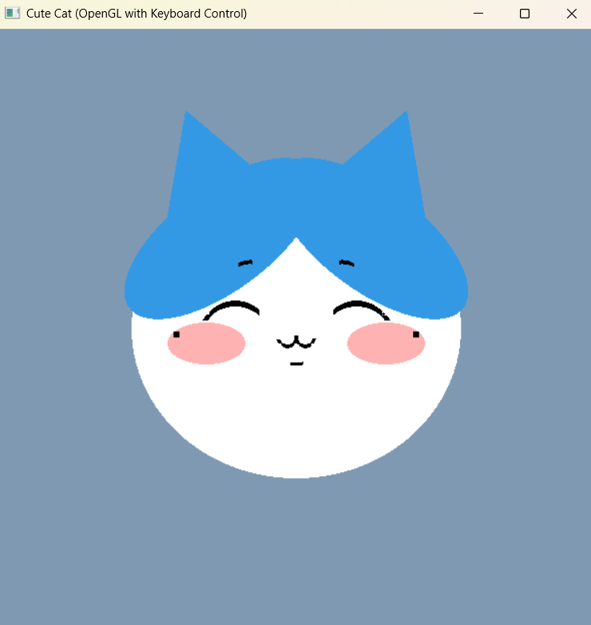
2D Cat Scene created with OpenGL transformations
Animation (2D Solar System)
2D Solar System Animation with real-time orbital motion
In this project, I built a 2D solar system simulation with multiple planets and comets moving in orbital
paths.
The system supports an optional "time mode," where the arrangement of planets visually encodes the
real-world time at the moment the program runs.
This assignment strengthened my understanding of hierarchical motion, periodic functions, and time-based
updates.
It also emphasized designing animations that remain stable and smooth frame-to-frame.
Lighting and Shading
This assignment explores how light interacts with surfaces through different lighting and shading
models.
I applied multiple approaches to compare how choices like diffuse/specular components and shading
strategies affect realism and visual style.
The project highlights the difference between “how we compute light” and “how we display it,” and why
those decisions matter.
It also helped me build a stronger mental model of normals, material parameters, and illumination
behavior.
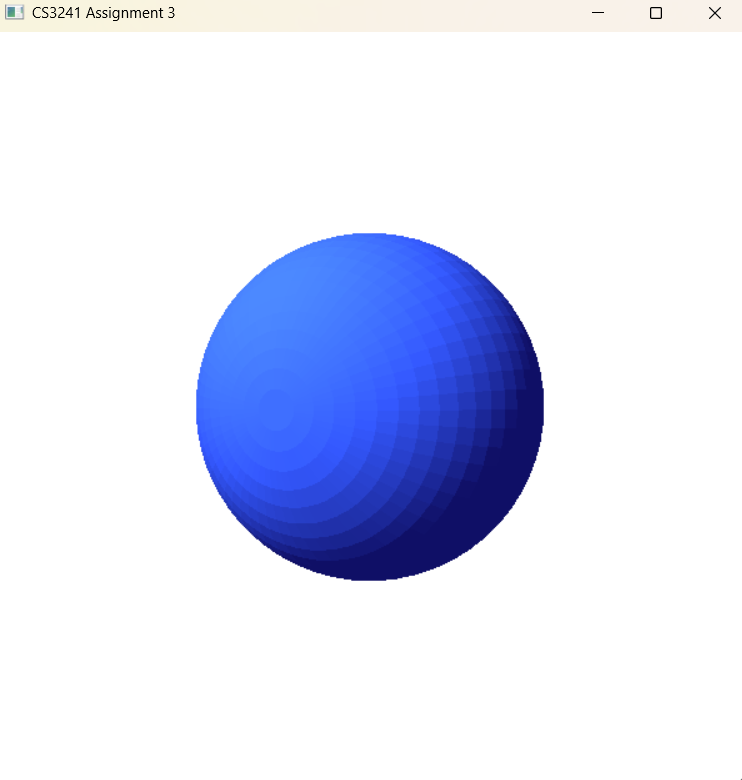
Flat shading on a sphere
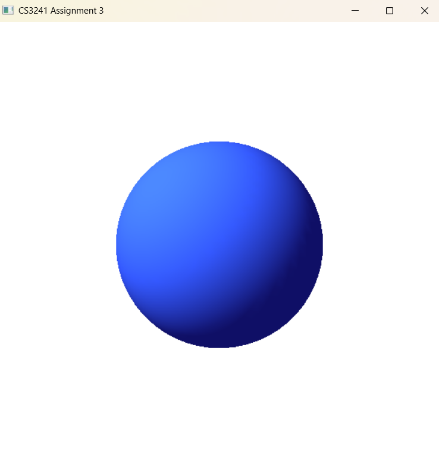
Smooth shading on a sphere
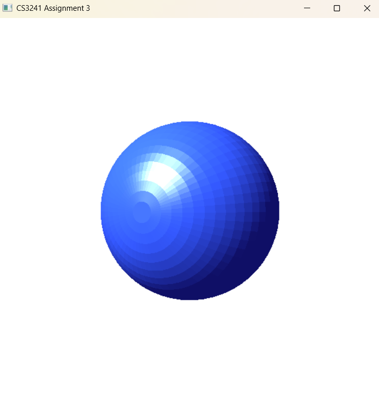
Flat shading with highlights on a sphere
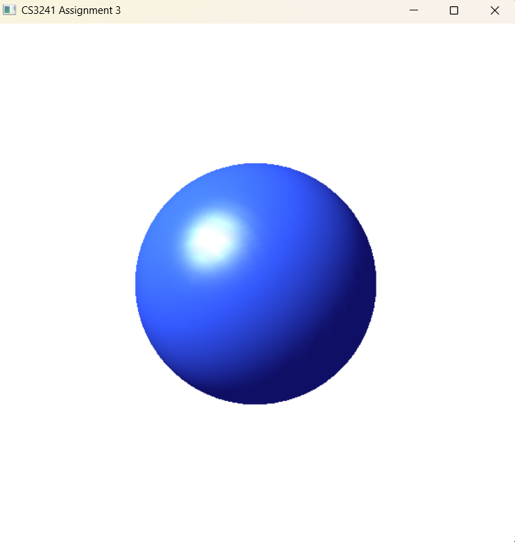
Smooth shading with highlights on a sphere
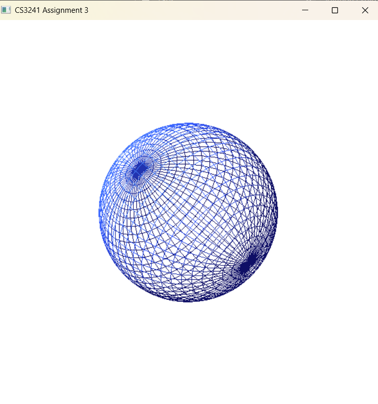
Wireframe view of a sphere
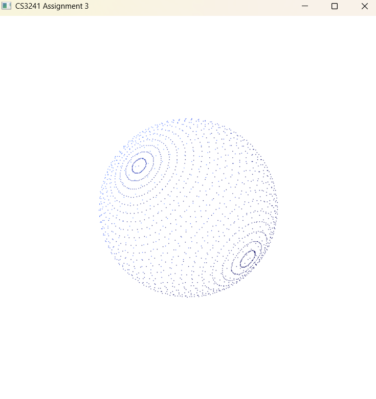
Point structure of a sphere
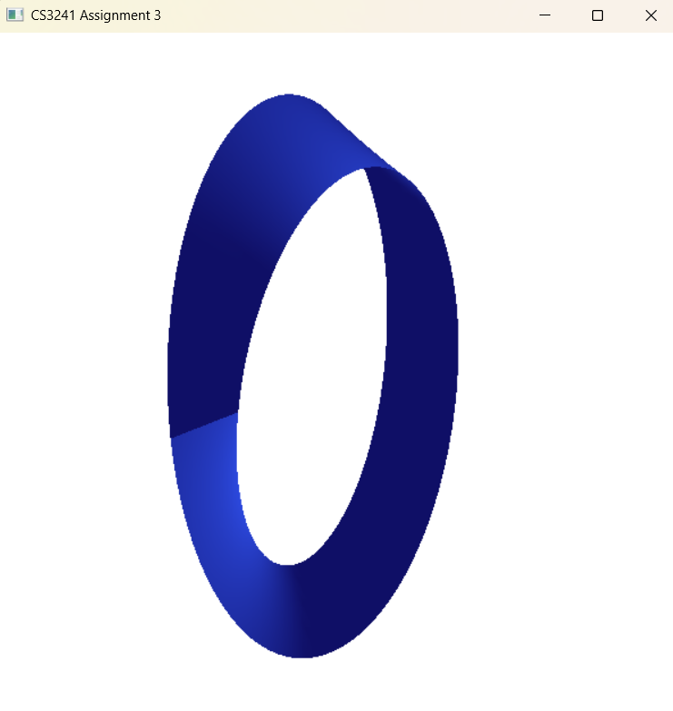
Shaded Mobius strip
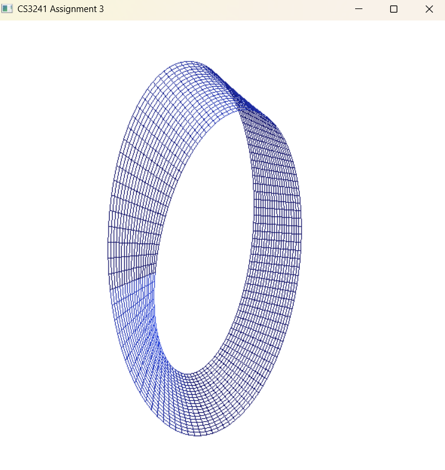
Wireframe view of a Mobius strip
Mobius Strip Animation
Bezier Curves
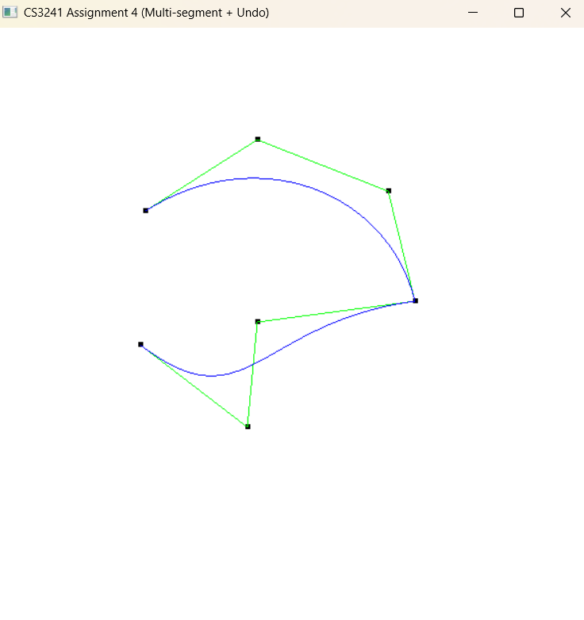
Basic Bezier curve
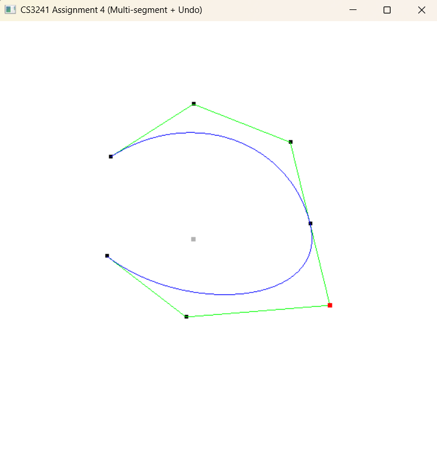
C1 continuous Bezier curve
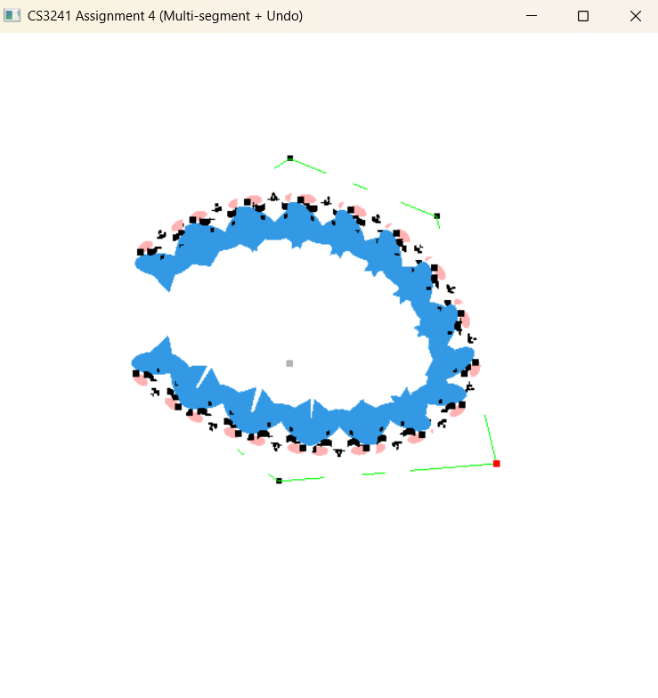
Bezier in cat shape
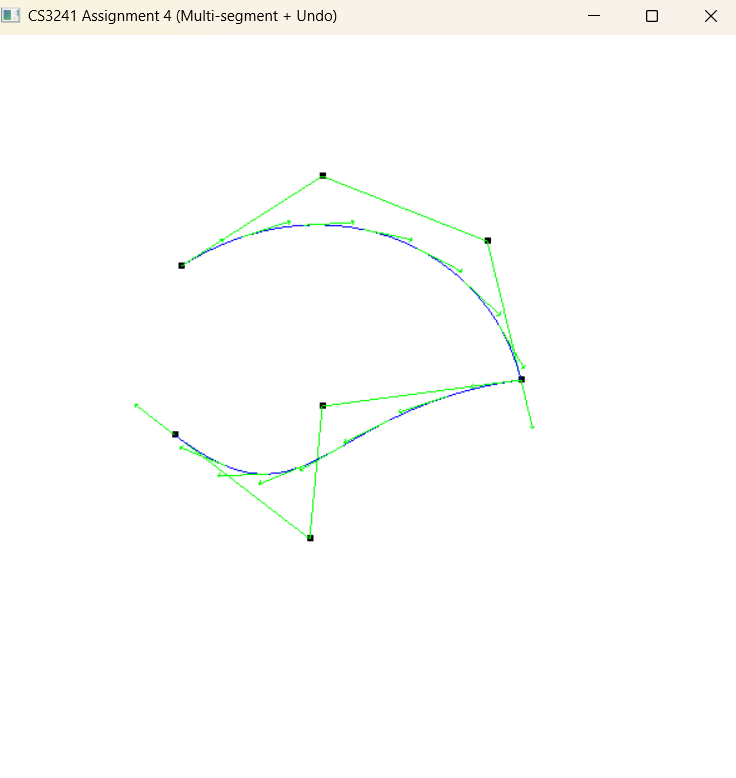
Bezier curve with tangent vectors shown
This project implements Bezier curve drawing and curve-based shape construction.
I can draw Bezier curves manually as there is no built-in functions that support Bezier curves in OpenGL,
and also generate more complex curve graphs by parsing an input text file.
The focus is on understanding curve evaluation, control points, and how small changes in parameters reshape the final geometry.
It also demonstrates how a simple mathematical representation can produce expressive and intricate visual designs.
Ray Tracing
In this project, I implemented ray tracing to render different subjects with more physically grounded effects.
The renderer includes shadow computation and texture mapping, moving beyond real-time rasterization toward offline-style rendering.
This project reinforced core ray tracing concepts such as ray–object intersection, shading at hit points, and shadow rays.
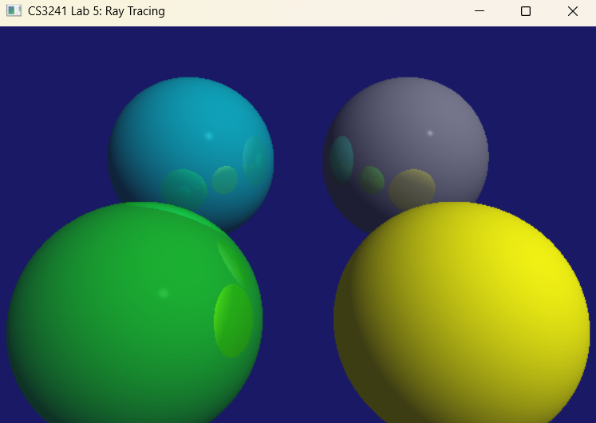
Basic ray tracing on 4 spheres
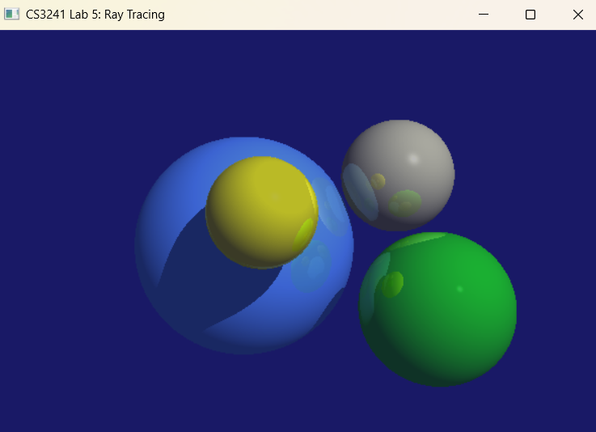
Ray tracing on 4 spheres with shadow effects
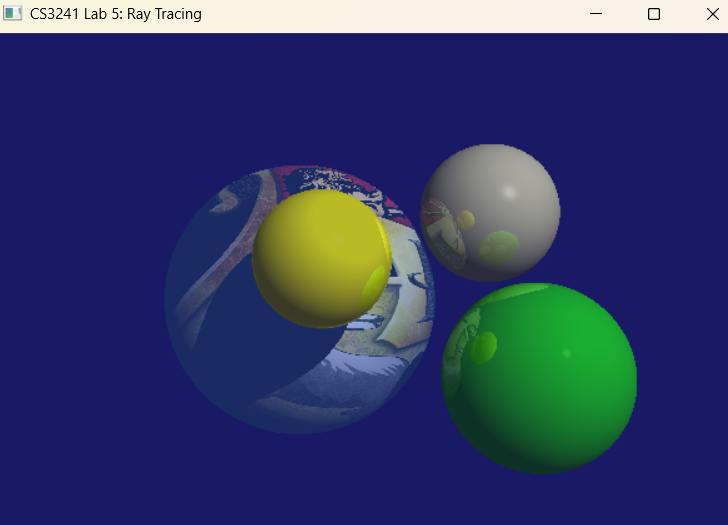
Texture mapping on sphere 1
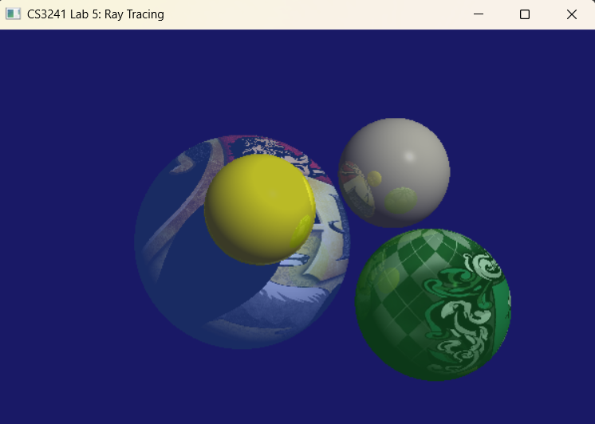
Texture mapping on sphere 2
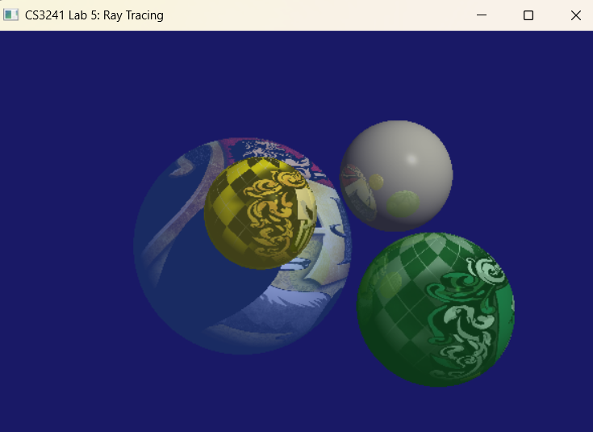
Texture mapping on sphere 3
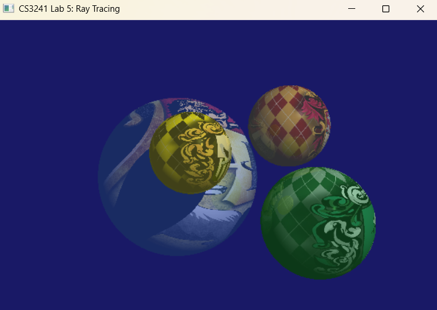